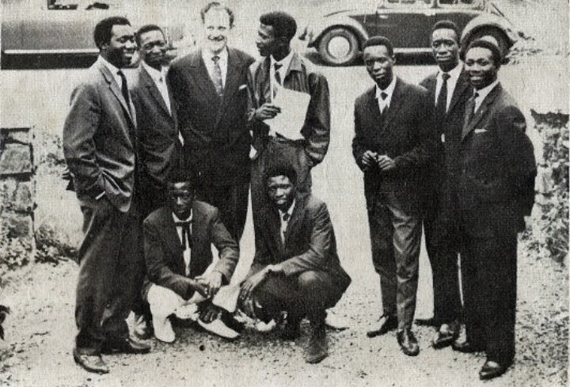
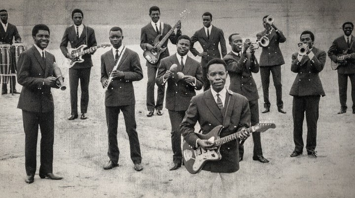
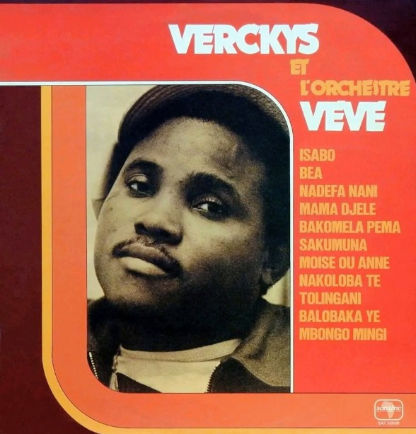
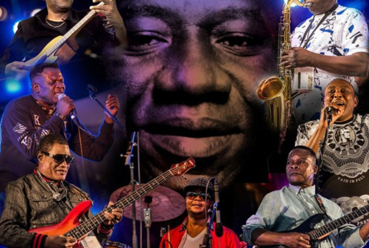

Kinshasa · founded 1953
African Jazz
Founded by Grand Kallé, African Jazz helped bring modern Congolese rumba to a broad audience during a defining period in the country's cultural history.
Explore African Jazz
The sound behind the stories
Meet the groups whose musicians, arrangements and restless creativity shaped Congolese rumba, soukous and the wider African soundscape.
Congo & the rumba tradition
Start with the pioneering orchestras of the 1950s and 1960s, then follow the musicians and musical ideas into the soukous era and beyond.

Kinshasa · founded 1953
Founded by Grand Kallé, African Jazz helped bring modern Congolese rumba to a broad audience during a defining period in the country's cultural history.
Explore African Jazz
Kinshasa · founded 1956
Franco Luambo and generations of musicians built one of Congolese music's most influential orchestras, known for intricate guitar work and rich vocal interplay.
Explore OK Jazz
Kinshasa · formed 1963
Tabu Ley Rochereau, Dr. Nico Kasanda and Roger Izeidi were among the musicians who formed African Fiesta. Its legacy continued through African Fiesta National and African Fiesta Sukisa.
Explore the African Fiesta archiveKinshasa · founded 1967
Led by Lita Bembo, Stukas brought youthful energy and theatrical flair to Kinshasa's Yé-Yé scene. Its inventive dances, including La Bionda, Mata-kita and Mombombo, showed how choreography and stage spectacle shaped popular culture.

Kinshasa · founded 1969
Explore the group's founders, musicians, recordings and innovations, as well as the influential bands that grew from its musical family.
Explore the Zaïko archive
Kinshasa · formed 1969
Founded by Georges Kiamuangana Mateta, known as Verckys, Orchestra Vévé became an important force in Congolese rumba and soukous. Its legacy includes influential recordings and the wider Éditions Vévé music enterprise.
Explore the Orchestra Vévé archive
Kinshasa · established around 1970
Led by Tabu Ley Rochereau, Afrisa carried forward the African Fiesta National tradition and became a defining orchestra in Congolese rumba and soukous.
Explore the Afrisa International archiveKinshasa · founded 1972
Led by Pépé Kallé, alongside musicians such as Papy Tex and Dilu Dilumona, Empire Bakuba became a major force in Congolese soukous. Its rhythm-driven sound, powerful vocals and lively performances won it audiences across Africa, especially during the 1980s.
Kinshasa · founded 1977
Founded by Papa Wemba, Viva La Musica became one of modern Congolese music's defining orchestras. Its melodic rumba, distinctive stage presentation and nurturing of new talent helped carry its music to audiences far beyond Central Africa.
Kinshasa · formed 1981
Backed by producer Verckys Kiamuangana and led artistically by Evoloko Jocker, Langa Langa Stars brought together musicians from the Zaïko Langa Langa generation, including Bozi Boziana and Dindo Yogo. Its members went on to shape later chapters of Congolese rumba and soukous.
Kinshasa · founded November 1983
Founded by Ben Nyamabo, Choc Stars became one of the celebrated orchestras of the 1980s. Its changing line-ups included Bozi Boziana, Defao and Roxy Tshimpaka; recordings such as Riana helped establish its reputation during the creative, competitive soukous era.
Kinshasa · led by King Kester Emeneya
King Kester Emeneya formed Victoria Eleison after a major departure of musicians from Papa Wemba's Viva La Musica. The orchestra became known for Emeneya's expressive vocals and experiments with synthesizers, electronic production and contemporary rhythms—an approach that helped modernise Congolese rumba.
Keep exploring
Discover the artists behind these orchestras and trace the connections between their careers and musical eras.
Meet the legends